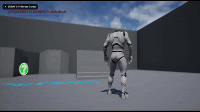
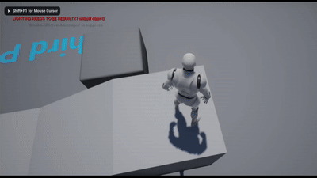
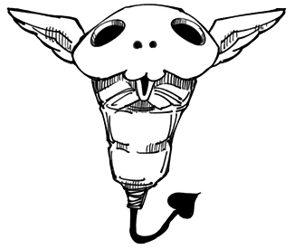
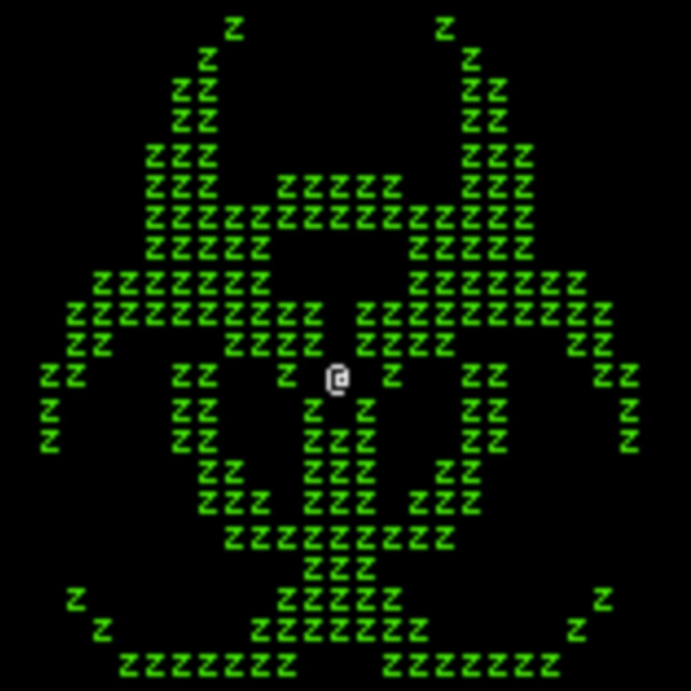

This is a simple ability I made which spawns a pillar below the user which quickly grows in height before despawning after a few seconds. The idea was to give a character vertical mobility without just having them jump.
The ability was made with UE4 blueprints and triggered using the Gameplay Ability System. The pillar object itself is a spline with a cylinder mesh attached. The pillar is then set to grow over the course of one second so that after being spawned under the player, it raises them into the air.
This is an ability which procedurally spawns a path in front of the user in the direction they are looking while slowly declining in elevation. The idea was to enable horizontal mobility that allies could benefit from as well.
The ability was made with UE4 blueprints and triggered using the Gameplay Ability System. The path object is a single square mesh attached to a spline, with a function to extend the path. The ability summons a path object below the player in the direction they are facing, then sets up a timer to continually extend the path for a certain amount of time. Each iteration the location of the next spline point is calculated by taking the location of the last spline point and adding an offset based on the direction the player is looking. A Negative offset is added in the vertical direction to cause the path to trend downwards.
A project I wasn't able to finish was a Discord bot in Python for an RPG server I was in. A group made rules for a game based on a show, Jujutsu Kaisen, but tracked everything manually and used a dice bot to determine the outcome of actions. To make running the game easier, I began development on a bot to track character stats, manage turn order, and automatically apply the effects of various abilities. It had a sqlite3 database To store player information and used autocomplete lists to force valid user inputs. The server ended up dying before I was able to finish, but it was still a useful exercise in using the Discord API. Though, I did have to write a git hook to stop me from uploading my bot token online. You can find the code here.
I got a pull request merged for Cataclysm: Dark Days Ahead, an open-source zombie survival sandbox game. There was a bug where NPC survivors would sometimes spawn without weapons because the system tried to give them a weapon based on their best combat skill, but the set of combat skills was greater than the set of legal weapon types. It's not much, but I did it which has to be worth something. Plus, I've been playing the game on and off for almost a decade, so it was nice to finally contribute. You can view the PR here.